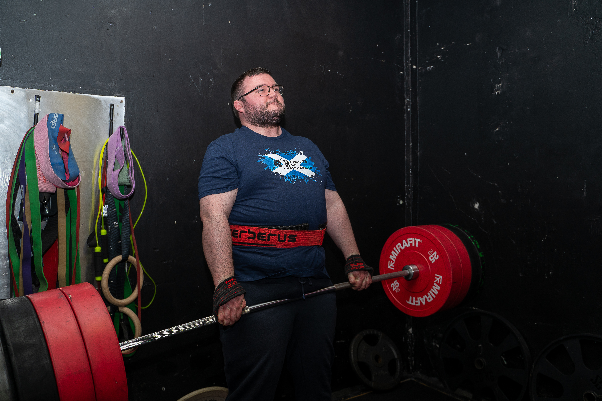

Alistair Quinn
Summary
Software engineer with experience developing desktop and web applications, services, test systems, and data-driven tools. Comfortable working across C#, C/C++, Python, React, SQL, Blazor, WPF, and TestStand, with a focus on solving practical problems as part of an agile team.
Experience
Sword Group — Software Engineer I
Sep 2024 — Present
- Work in a small agile team on .NET C# software using Blazor and WPF.
- Write and update SQL scripts, service code, and technical documentation.
- Implement features for an application that displays 3D images and point cloud data, including side-by-side viewing.
Impact Subsea Ltd — Software Engineer
July 2022 — June 2024
- Developed a React and Python web application with an SQL database for product QA.
- Connected the application to subsea sensors through a Python SDK wrapper around a C++ SDK.
- Built real-time data graphs and tooling for calibration of internal sensors.
Leonardo UK, Edinburgh — Software Engineer
September 2021 — July 2022
- Maintained existing C# and C/C++ software within Test Systems.
- Provided software knowledge to project teams and developed a Python GUI application.
- Shadowed test engineers creating test programs and developed knowledge of TestStand.
Leonardo UK, Edinburgh — Graduate Software Engineer
September 2019 — September 2021
- Created a C# WPF application for a tablet and PXI controller to run test programs and view XML test results.
- Used TestStand ActiveX Controls and created custom step types, including supporting user interfaces.
- Worked collaboratively across Leonardo as part of the graduate scheme.
Leonardo UK, Edinburgh — Summer Placement Software Engineer
June 2018 — September 2018
- Created an Android application in Java for reading XML reports generated from TestStand.
- Parsed XML into objects and displayed test results with pass, fail, and error status colours.
- Learned about Leonardo’s SDLC, LabWindows CVI, and LabVIEW.